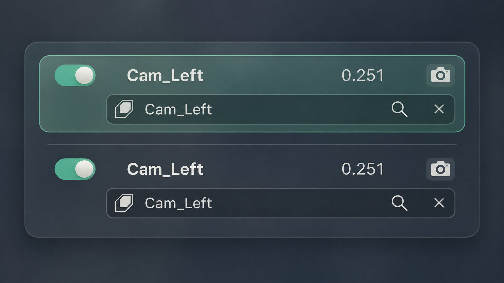
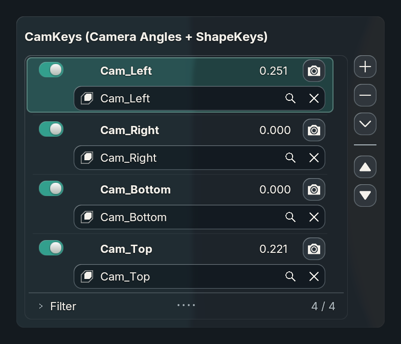
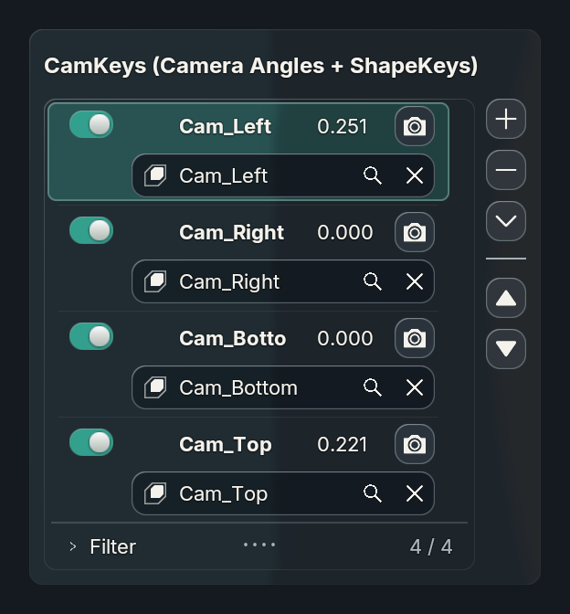

Shared name/search grid · native source icons · inset searchable fields · clear action · retained live values

Concept artwork. The implementation uses exact shared text origins and original Blender icon artwork.
Unedited production-renderer capture, 360 logical units at 2×. The original CamKeys UIList callback supplies every control; no CamKeys-specific layout branch.
Utility controls and values remain visible. Long primary names can clip at 280 logical units; the search field retains more room. The more compact spacing and typography are deliberate host-scale differences from the generated artwork.
359 unit tests; Blender 5.1.2 and 5.2.2 custom-consumer checks. Captures at 1×, 1.5× and 2× for both widths. Verified native SHAPEKEY_DATA icons, clear binding/commit, property context menus and live label updates without row replacement. These captures use a disposable fixture, not the Uraraka scene. Shared glass and motion paths are retained; these stills do not prove every animation state or other GPU backends.
Runtime evidence · Overview and estimate · Native Blender baseline